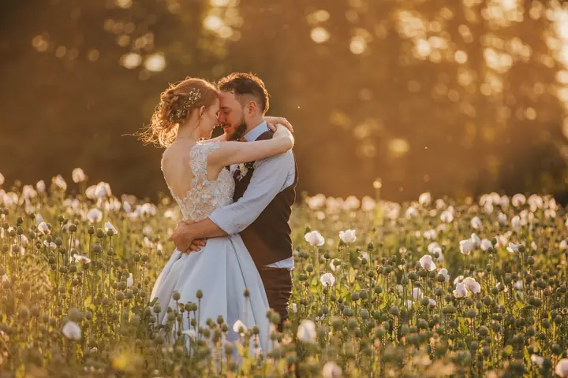
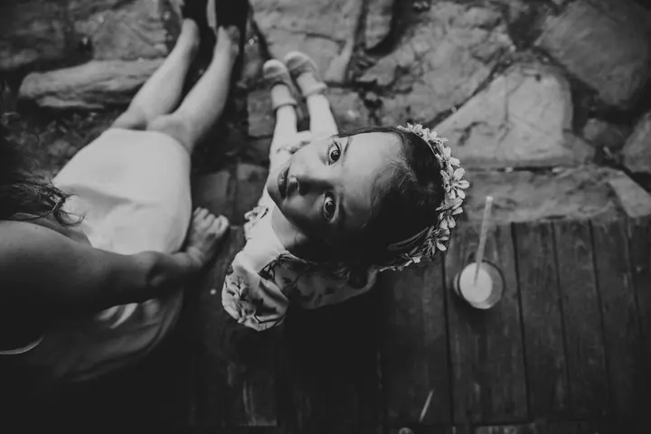

jedna
Svatební fotografie
Celý svatební den od příprav po večer, s předsvatební schůzkou zdarma. Fotky dostanete upravené na USB a také vytištěné.

Svatební a rodinná fotografka · Suchdol nad Odrou, Novojičínsko

Jmenuji se Petra Krotká a fotím svatby, rodiny, těhulky i nejmenší miminka. V Suchdole nad Odrou mám ateliér KropFoto, kde se budete cítit jako doma. S páry ale ráda vyrážím i ven, do polí, zahrad a ke starým stodolám.
Více o mně
Co fotím
jedna
Celý svatební den od příprav po večer, s předsvatební schůzkou zdarma. Fotky dostanete upravené na USB a také vytištěné.
dvě
Focení venku nebo v interiéru, 60 až 90 minut. Z náhledů si vyberete 10 fotografií, které pro vás upravím.
tři
První fotky miminka v klidu ateliéru KropFoto. Rekvizity vám ráda zapůjčím.
Umělecké portréty a akty i business a neformální portréty. Dostanu z vás to nejlepší.

Protože svatba je jen jednou za život


Za objektivem
Jmenuji se Petra Krotká a pod značkou KropFoto fotím na Novojičínsku svatby, rodiny, těhotné maminky, novorozence i portréty. Fotky pro mě nekončí na obrazovce, a proto je ke každému focení můžete dostat také vytištěné, od klasického formátu 10×15 cm až po A3.
Na focení přináším spoustu nápadů na místa i pózy. Chci, abyste se před foťákem cítili přirozeně, protože to je pak na fotkách vidět nejvíc. Dostanu z vás to nejlepší, a možná i něco, o čem jste ani netušili, že to dovedete.
V Suchdole nad Odrou mám vlastní ateliér, první, kde se cítíte jako doma. Jsou v něm rekvizity, které vám ráda zapůjčím, a klid pro miminka, děti i celé rodiny. Přijďte a sami poznáte.
Petra
Sejdeme se zdarma a probereme, jak si svůj den představujete. Domluvíme rozsah focení a místa, kde to bude nejkrásnější.
Jsem s vámi ve chvílích, kdy se to děje, a mezi tím vás vezmu na chvíli stranou na společné portréty.
Z náhledů si vyberete fotky a já je pro vás pečlivě upravím a vyretušuji.
Fotky dostanete na USB a také vytištěné. Formát tisku si zvolíte sami, od 10×15 cm až po A3.
Portfolio
Fotografie jsou ilustrační
Otázky
Svatby fotím od 6 900 Kč. Konečnou cenu skládám individuálně podle toho, co si přejete. Předsvatební schůzka, retuš, tisk fotek a USB jsou samozřejmostí.
Focení venku nebo v interiéru trvá 60 až 90 minut a stojí 2 190 Kč. Z náhledů si vyberete 10 fotografií, které pro vás upravím.
V ateliéru máme na focení 180 až 240 minut a můžete využít moje rekvizity. Za 2 990 Kč dostanete 10 upravených a rovnou vytištěných fotografií.
Ano. U každého focení se můžeme domluvit na počtu i velikosti tištěných fotografií, od 10×15 cm až po formát A3.
Napište pár vět o tom, co si představujete. · +420 608 504 350